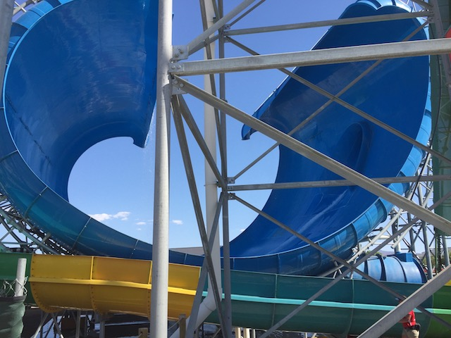
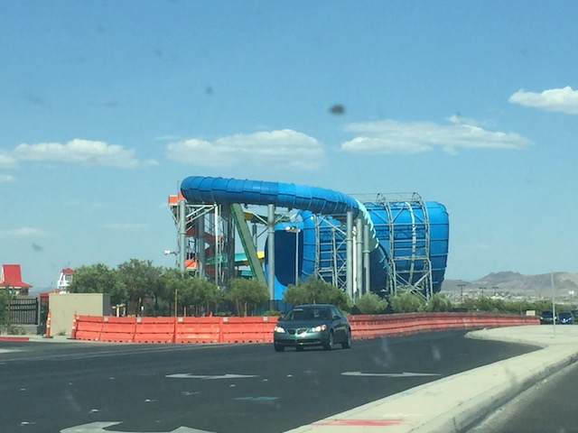

| |
Wild Surf Photos

We're here at SunSplash, where we'll be reveiwing Wild Surf. This is the parks Surf Safari waterslide which....definately looks unique and kind of funky. But once you get past the different look this slide has compared to other water slides, you quickly realize that this is essentially like a cross between a half pipe and a tornado. Yeah. It doesn't look quite as nice, but it rides pretty damn well. Anyways, we reach the top, get in the rafts, and we're off. Much like your standard Tornado clone, we go around a turn in the dark only to drop out into the......uh.....Surf Safari portion. The part that's most noticable. And yeah. Considering its a cross between a half pipe and a tornado, there's definately some good swinging action. Hell, I kind of like this better than both. Get the height of the halfpipe with the rocking of the Tornado. Go through a hole, small drop into a pool. Nothing truly amazing, but still a fun slide nonetheless.
7/10
Location: Cowabunga Bay Las Vegas
Opened: 2015
Built by: Polin Waterslides
Last Ridden: June 5, 2017
Wild Surf Photos


Home
|